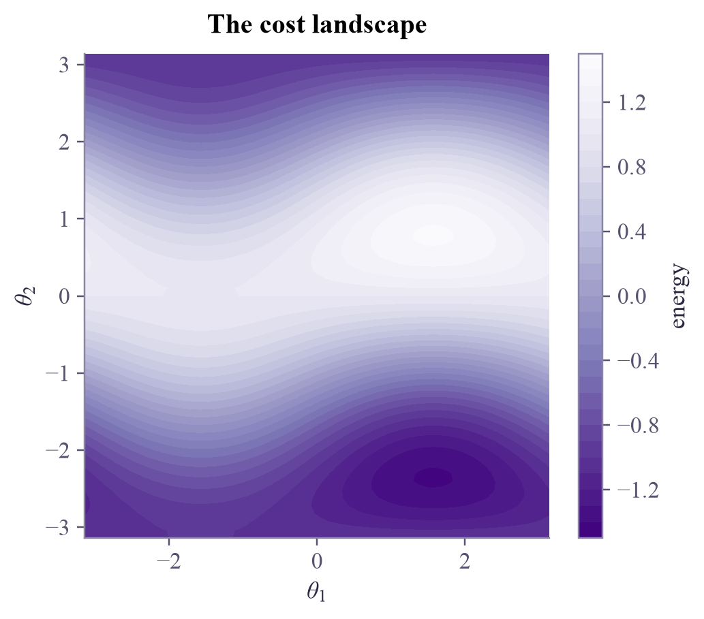
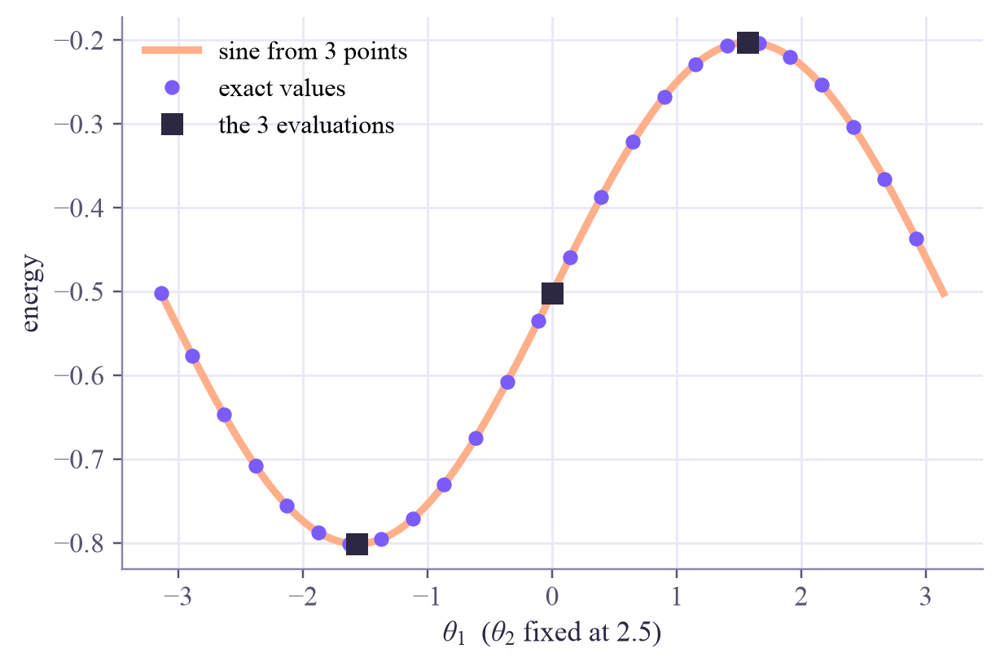
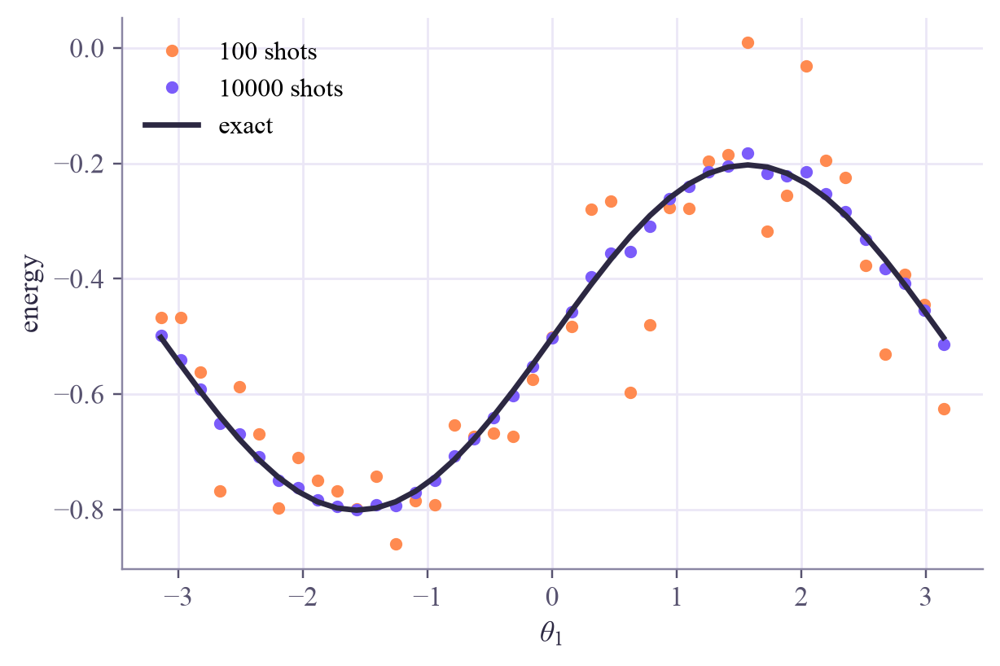
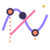

energies of H (eigenvalues): [-1.4142 -1. 1. 1.4142] lowest energy on the grid: -1.412 ground state: -1.414

Turn the knobs, watch the cost: valleys, hills and traps. And one gift from quantum mechanics: along any single knob, the landscape is a perfect sine wave.

Training is a hike downhill in fog: you only feel the ground under your feet. Today, for a circuit with just two knobs, we can lift the fog and see the whole map: where the valleys are, where the traps are, and why some paths never reach the bottom.
A cost turns a knob setting into a number to minimize. The classic choice is an energy: an observable , written as a sum of Pauli strings (week 4), and
Today , a tiny magnet model. Its lowest possible energy, the ground state energy, is . The circuit: and , then a CNOT. Every gives a point on the cost landscape.
The sine-wave gift. Fix every knob but one. That knob sits in a single rotation gate, and its matrix contains only and ; the cost multiplies two such matrices, so it is exactly
Three evaluations (say at , and ) give , and , and with them the whole slice and its lowest point. Tomorrow's gradients rest on the same fact.
Traps. A landscape can have local minima: points where every small step goes uphill, yet lower ground exists elsewhere. Here there's a valley at next to the true bottom at . Shot noise blurs everything: with 100 shots each energy wobbles by about 0.1, enough to hide shallow valleys.
The cost landscape is the map training walks on: sine waves along every knob, valleys that may be traps, and a fog of shot noise over all of it.
Tap the map to place yourself. The two charts are the slices through your point: the exact curve, the three orange evaluations, and the sine they define. Jump to a slice's lowest point, or roll downhill in small steps.
From the starting point, roll downhill: you end up at −1.000, a local minimum (in fact a whole flat valley). Tap the same start again and press the two jump buttons in turn, three times each: looking at whole slices, they reach −1.414. Switch off the CNOT: the best you can reach is −1.25 (Monday's lesson: no entanglement, no ground state). Then try 100 shots and see the map turn grainy.
qc-w7d2.ipynb. To change the code and run it yourself, open the notebook in Google Colab (free, in your browser) or download it for your own Jupyter.import numpy as np
import matplotlib.pyplot as plt
from qiskit import QuantumCircuit
from qiskit.circuit import Parameter
from qiskit.quantum_info import SparsePauliOp
from qiskit.primitives import StatevectorEstimator
H = SparsePauliOp.from_list([("ZZ", 1.0), ("IX", 0.5), ("XI", 0.5)]) # Qiskit reads Pauli strings right to left
print("energies of H (eigenvalues):", np.linalg.eigvalsh(H.to_matrix()).round(4))
t1, t2 = Parameter("θ1"), Parameter("θ2")
circuit = QuantumCircuit(2)
circuit.ry(t1, 0)
circuit.ry(t2, 1)
circuit.cx(0, 1)
estimator = StatevectorEstimator()
grid = np.linspace(-np.pi, np.pi, 61)
points = np.array([[a, b] for a in grid for b in grid])
E = estimator.run([(circuit, H, points)]).result()[0].data.evs.reshape(len(grid), len(grid))
print(f"lowest energy on the grid: {E.min():.3f} ground state: {-np.sqrt(2):.3f}")
plt.figure(figsize=(5, 4.2))
plt.contourf(grid, grid, E.T, levels=30, cmap="Purples_r")
plt.colorbar(label="energy")
plt.xlabel(r"$\theta_1$")
plt.ylabel(r"$\theta_2$")
plt.title("The cost landscape")
plt.show()energies of H (eigenvalues): [-1.4142 -1. 1. 1.4142] lowest energy on the grid: -1.412 ground state: -1.414

def slice_energy(theta, fixed=2.5):
return estimator.run([(circuit, H, [theta, fixed])]).result()[0].data.evs.item()
c0, cp, cm = slice_energy(0.0), slice_energy(np.pi / 2), slice_energy(-np.pi / 2)
c = (cp + cm) / 2
b = (cp - cm) / 2
a = c0 - c
xs = np.linspace(-np.pi, np.pi, 200)
exact = [slice_energy(x) for x in xs[::8]]
plt.plot(xs, a * np.cos(xs) + b * np.sin(xs) + c, color="#ffb08a", lw=3, label="sine from 3 points")
plt.plot(xs[::8], exact, "o", color="#7b5cfa", ms=5, label="exact values")
plt.plot([0, np.pi / 2, -np.pi / 2], [c0, cp, cm], "s", color="#2c2842", ms=8, label="the 3 evaluations")
plt.xlabel(r"$\theta_1$ ($\theta_2$ fixed at 2.5)")
plt.ylabel("energy")
plt.legend()
plt.show()
print(f"slice minimum at theta1 = {np.arctan2(-b, -a):.3f}, energy {c - np.hypot(a, b):.3f}")
slice minimum at theta1 = -1.571, energy -0.801
def energy(theta):
return estimator.run([(circuit, H, theta)]).result()[0].data.evs.item()
def small_steps(start, lr=0.2, steps=150):
theta = np.array(start, dtype=float)
for _ in range(steps):
slope = [(energy(theta + s) - energy(theta - s)) / 2 for s in (np.array([np.pi / 2, 0]), np.array([0, np.pi / 2]))]
theta -= lr * np.array(slope)
return energy(theta)
def jumps(start, rounds=6):
theta = np.array(start, dtype=float)
for _ in range(rounds):
for k in range(2):
def f(x):
trial = theta.copy()
trial[k] = x
return energy(trial)
c0, cp, cm = f(0.0), f(np.pi / 2), f(-np.pi / 2)
c = (cp + cm) / 2
theta[k] = np.arctan2(-(cp - cm) / 2, -(c0 - c))
return energy(theta)
for start in [(0.3, 0.3), (-2.0, 2.0), (-1.5, -2.5)]:
print(f"start {start}: small steps end at {small_steps(start):.3f}, jumps end at {jumps(start):.3f}")start (0.3, 0.3): small steps end at -1.414, jumps end at -1.414 start (-2.0, 2.0): small steps end at -1.000, jumps end at -1.414 start (-1.5, -2.5): small steps end at -1.000, jumps end at -1.414
Recompute one slice from 100 and from 10,000 shots, and compare with the exact curve. How big is the wobble?
xs_coarse = np.linspace(-np.pi, np.pi, 41)
exact_slice = estimator.run([(circuit, H, [[x, 2.5] for x in xs_coarse])]).result()[0].data.evs
for shots in [100, 10000]:
noisy_estimator = estimator # TODO: StatevectorEstimator(default_precision=1 / np.sqrt(shots), seed=1)
values = exact_slice # TODO: noisy_estimator.run(...) for the same points
plt.plot(xs_coarse, values, "o", ms=4, label=f"{shots} shots")
plt.plot(xs_coarse, exact_slice, color="#2c2842", label="exact")
plt.legend()
plt.show()StatevectorEstimator(default_precision=1 / np.sqrt(shots), seed=1) adds shot-like noise of the right size. Run it on the same list of points as the exact slice.
xs_coarse = np.linspace(-np.pi, np.pi, 41)
exact_slice = estimator.run([(circuit, H, [[x, 2.5] for x in xs_coarse])]).result()[0].data.evs
for shots, color in [(100, "#ff8a50"), (10000, "#7b5cfa")]:
noisy_estimator = StatevectorEstimator(default_precision=1 / np.sqrt(shots), seed=1)
values = noisy_estimator.run([(circuit, H, [[x, 2.5] for x in xs_coarse])]).result()[0].data.evs
plt.plot(xs_coarse, values, "o", ms=4, color=color, label=f"{shots} shots")
print(f"{shots:6d} shots: typical error {np.std(values - exact_slice):.3f}")
plt.plot(xs_coarse, exact_slice, color="#2c2842", label="exact")
plt.xlabel(r"$\theta_1$")
plt.ylabel("energy")
plt.legend()
plt.show()
print("100 shots blur the landscape by about 0.1: comparable to the depth of shallow valleys.")100 shots: typical error 0.094 10000 shots: typical error 0.009

100 shots blur the landscape by about 0.1: comparable to the depth of shallow valleys.
In quantum ML the cost is a loss over training data instead of an energy, but the landscape behaves the same: sine waves along each knob, traps, and shot noise. Tomorrow you'll measure its slopes exactly; on Friday you'll see how, for big circuits, the whole map can go flat.
Ostaszewski, Grant and Benedetti, "Structure optimization for parameterized quantum circuits" (Quantum, 2021), turns today's sine-wave jumps into an optimizer called Rotosolve.
Next in Quantum Computing: exact gradients from two shifted circuits, the parameter-shift rule.

Tap the button to save it. Short and steady wins.

Next in Quantum ComputingParameter-shift gradientsMarked by mistake? Undo